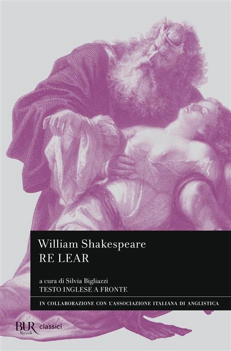

15:30 · 6 OPERE
Le certezze dei mormoni.
Il filo del discorso
La ripetizione di formule di certezza nella comunità mormone è il punto di partenza di una riflessione sulla differenza fra convinzione e conoscenza. Dr Divago collega educazione religiosa, autorità del fondatore e proiezioni dell’immagine paterna, sostenendo che la sicurezza soggettiva non costituisca una prova. Il discorso passa attraverso l’interpretazione di Genesi e Isaia e il confronto fra mito e ragione. I richiami alla verità e a Re Lear accompagnano una conclusione sulla possibilità di interrogare le proprie convinzioni e riconoscere i limiti del giudizio.
I libri nel discorso

Libro di Mormon
Copertina: Church Distribution · edizione italiana di riferimento
Copertina reale di riferimento; l’edizione non è identificata come quella citata nel video.
Il Libro di Mormon è nominato fra le formule di certezza della comunità.
Passaggio 0:48 ↗ · Fonti e libro ↗
Genesi
Copertina: Einaudi, I libri della Bibbia / Einaudi Tascabili, 2000; introduzione di Steven Rose
Copertina dell’edizione autonoma Genesi, nella serie I libri della Bibbia, con introduzione di Steven Rose. Edizione scelta come riferimento iconografico; nessuna edizione è confermata nel video.
È richiamato il passo della Genesi sull’essere come Dio.
Passaggio 10:11 ↗ · Fonti e libro ↗
Isaia
Copertina del volume completo: San Paolo, 2014 · Nuova Versione dai Testi Antichi · edizione di riferimento
Isaia è un libro della Bibbia. L’immagine mostra il volume completo di riferimento San Paolo, non un’edizione autonoma di Isaia né una versione identificata nella citazione.
Isaia è nominato con il riferimento al capitolo 14.
Passaggio 10:26 ↗ · Fonti e libro ↗Bibbia
Identificazione probabile
Copertina: San Paolo, 2014 · Nuova Versione dai Testi Antichi · edizione di riferimento
La domanda di Paolo sull’essere diventato nemico dicendo la verità è un richiamo al corpus biblico; non viene annunciato il titolo della lettera.
Passaggio 13:02 ↗ · Fonti e libro ↗Vangelo secondo Giovanni
Identificazione probabile
Copertina del volume completo: San Paolo, 2014 · Nuova Versione dai Testi Antichi · edizione di riferimento
Vangelo secondo Giovanni è un libro della Bibbia. L’immagine mostra il volume completo San Paolo di riferimento, non un’edizione autonoma del singolo libro e non una versione identificata nella citazione.
La formula sulla verità che rende liberi rinvia probabilmente al Vangelo secondo Giovanni.
Passaggio 14:26 ↗ · Fonti e libro ↗
Re Lear
Copertina: BUR · Classici · 2026 · a cura di Silvia Bigliazzi
Copertina autentica di riferimento, controllata visivamente. L’edizione non è identificata come quella usata nel video.
Shakespeare e Re Lear sono nominati nel finale.
Passaggio 15:13 ↗ · Fonti e libro ↗